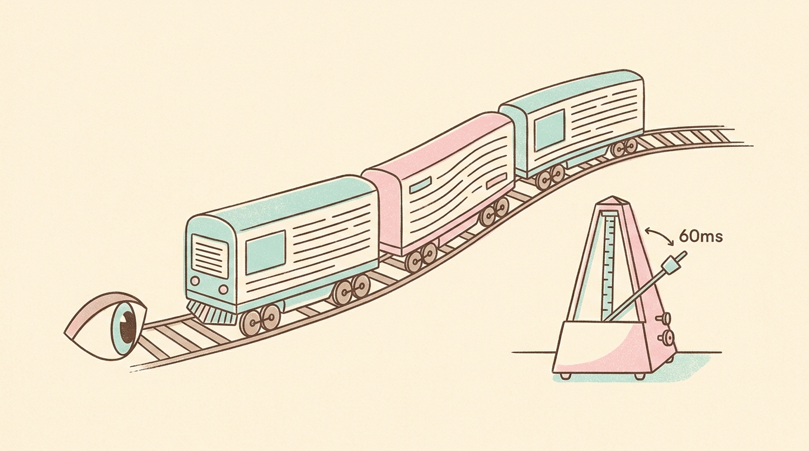

为什么绝大多数 AI 产品用起来都让人难受？
从转圈、骨架屏到流式：如何做一个让人舒服的 AI 界面
大模型把接口耗时从几十毫秒拉长到了 400 毫秒至 30 秒。等待不再是系统的边缘状态，它占了 80% 的交互现场。这是一份写给所有 AI 产品经理、UX 设计师与前端工程师的实战手册：别把延迟当成要遮掩的家丑，把它当成一种交互材料，按时间阈值挑对组件，给流式安上节拍。
一、一个被大模型打破的交互常识
做传统 Web 交互时，加载（Loading）是个边缘状态：界面画完了，最后顺手塞个转圈的 Spinner，因为网络往返通常在 200 毫秒内解决。
在大模型和 Agent 产品里，这个常识彻底失效了。一次推理短则 800 毫秒，长则半分钟，而且你在结束之前根本不知道它要跑多久。等待变成了整个交互的主体。用户在这几十秒里盯着屏幕，做出决定：这个东西到底是在认真干活，还是已经卡死了？
很多 AI 产品让人觉得“假、躁、烦”，根源不是模型笨，而是界面把这十几秒的等待当成了普通网络请求来糊弄：120 毫秒的筛选加了闪烁的骨架屏，11 秒的 Agent 深度推理却只留一个光秃秃的旋转菊花。力气全用错了区间。
二、三道不可逾越的认知阈值
人机交互里有三道死线，自 1968 年 Miller 提出、1993 年 Nielsen 普及以来，半个世纪没有变过：
| 阈值 | 感知状态 | 交互动作原则 |
|---|---|---|
| < 100 ms | 瞬时响应 | 完全不需要加载设计。加任何 Spinner 都会让界面显得更慢。 |
| < 1 s | 心流连贯 | 用户感知到了轻微延迟，但注意力不会中断。只需证明“系统收到了”，不必解释在干什么。 |
| > 10 s | 注意力涣散 | 心流彻底断裂，用户一定会切换标签页。界面必须经受住“被遗弃后再切回来”。 |
几乎所有的交互灾难，都是把设计精力花在了错误的区间上。把这三道线刻在案头，我们来看具体怎么选组件。
三、前 200ms 留给用户，而不是等模型
用户感受到的等待时钟，不是从服务端返回第一个字节开始走的，而是从点击的那一瞬间就开始计时。
因此最划算、性价比最高的优化，跟大模型没有半点关系：本地状态绝不等网络。
点击发送的瞬间，消息必须立刻出现在对话流中，输入框清空，发送图标瞬间切换为停止图标。这些动作完全依赖本地状态，根本不需要等服务端握手。这 150 毫秒的果断，能替整个系统争取到接下来整整一秒的用户宽容度。同一个需要耗时 4 秒的回答，前面这 150 毫秒有无响应，会直接决定用户评价它是“极快”还是“卡顿”。
用户按下发送 ↓ 【0 ms】 输入框立刻清空，消息上屏，Send 变成 Stop ← 本地状态，绝不等网络 ↓ 【400 ms】 模型尚未吐字，进入等待状态机 ↓ 【1000 ms+】 流式吐字平滑呈现
四、按耗时区间选组件，拒绝用 Spinner 撒谎
普通的旋转菊花（Spinner）在对用户撒谎：转了 800 毫秒是这个速度，转了 30 秒还是这个速度。它什么都没说，只暴露了开发者根本没测过耗时。
组件选择必须按时间分段：
-
1 秒以内：什么都不加，或者仅保留按钮按下态
让界面自然承接。多余的闪烁只会制造焦虑。
-
1 到 4 秒：仅在确切知道结果轮廓时使用骨架屏（Skeleton）
反模式三条灰色横线一闪，突然突变成一张四栏数据表。你承诺了一种形状，却交付了另一种，这比不给骨架屏更消耗信任。如果形状未知，宁可保持上一屏的旧内容。
-
4 到 15 秒：展示已逝时间（Elapsed Time）并指明当前步骤名
设计解法这时候简单的“处理中……”已经无法安抚用户。必须明确告诉用户它在干嘛（如：“正在搜索近 3 年财报”），并把秒数如实呈现在屏幕上。
-
15 秒以上：独立的等待场域，必须耐受刷新重连
长耗时保障用户必然切走。等他切回标签页、或者不小心刷新了页面，中间状态不能丢失。
超过 15 秒的等待，很多人会尝试“娱乐化设计”——比如在等待区塞一个 Subway Surfers 跑酷小游戏或趣味动画。第一次看固然眼前一亮，但绝不能进生产环境：它严重分散了注意力，到了第 50 次使用时，曾经的惊喜就变成了对核心任务的粗暴干扰。
五、展示已逝时间，而不是卡在 90% 的虚假进度条
大模型的推理机制决定了你根本无法提前预知它什么时候结束。一个卡在 90% 一动不动的进度条，是用户一眼就能识破的谎言。
如实展示**已逝时间（Elapsed Time）**是诚实且零成本的解法。它向用户传递的是：我还在持续运行，你已经投入了这么多秒，你可以据此决定继续等待还是中止。
做好这个计时器，有三个极易被忽视的工程细节：
// 错误做法：直接 setInterval 累加数字
setInterval(() => { elapsed += 0.1 }, 100);
// 当用户切换到后台标签页，浏览器会把定时器强制节流到 1 秒执行一次！
// 切换回来时，计时器显示的数值只有真实时间的十分之一。
// 正确做法：读取真实挂钟时间（Wall Time）
const startTime = performance.now();
setInterval(() => {
const currentElapsed = (performance.now() - startTime) / 1000;
render(currentElapsed);
}, 100);
- 使用等宽数字（Tabular Figures）：在 CSS 中声明
font-variant-numeric: tabular-nums;。否则每个数字宽度不同，计时器每一跳整行文字都在抽搐。 - 使用
performance.now()计算挂钟时间：定时器只决定界面的刷新频率，绝不能让定时器充当钟表本身。 - 尊重
prefers-reduced-motion规范：在减弱动态效果模式下，停掉旋转动画，但**必须保留数字计时器**。无障碍规范要求去除的是不必要的晃动装饰，而不是信息本身。
六、流式输出是有节拍的（Cadence）
大模型吐出的 Token 是突发的（Burst）：卡顿半秒，然后呼啦涌出一大堆。如果你拿到一段 chunk 就直接往页面上 append 一次，文字就会剧烈地一顿一挫。在人的感知里，抽搐比慢更像系统崩溃。
因此前端必须建立缓冲区，用自己的时钟重新发射（Buffer and Re-emit）：
LLM 突发吐块 ──> [ 前端平滑缓冲区 ] ──> 匀速发射到屏幕（约 60ms/词）
↑ 动态采样
根据近几批到达速率，自适应调节在 40~120ms 之间
发射速度来自人类真实的阅读生理极限。成年人阅读英文非虚构文本的平均速度是 238 词/分钟（约合 252 毫秒/词）。如果你以这个原速吐字，读者的眼睛就会紧贴着文字边缘，一旦模型稍微卡壳，读者就会被硬生生卡住。
把发射节拍定在人类阅读速度的 4 倍左右（约 60 毫秒一个词），每流式输出一秒，就能在读者的视线前平稳筑起一整行的文字缓冲跑道。读者的体感就会是“字已经在那里等我”，而不是“我在追着字跑”。

同时，严格遵守词（Word）优于字符（Character）。中文以词组为步长，英文以单词为步长。逐字逐字蹦出来那是老式打字机的复古皮套，不是高效交互。
最后，交互组件必须遵守严格的顺位律：可读（Readable）→ 完整（Complete）→ 可用（Usable）。在流式输出结束之前，千万不要露出“复制”或“重试”按钮——否则用户点一下复制，只拷走了半截没写完的话。
七、别让已渲染的文字在眼前跳舞
流式输出打破了 Web 排版的一条底层铁律：光标上方的文字必须保持绝对静止。如果光标在底下打字，上面的文字却在疯狂跳动重排，会让人产生强烈的眩晕感。
有三处最容易导致文字重排跳动的元凶：
- 流式输出期间禁用
text-wrap: balance和pretty：每追加一个词，浏览器就会对整段重新计算换行，首行甚至会被重新拆分八九次。平常用普通换行；等流式彻底结束后，再单次挂上pretty。 - Markdown 仅对已闭合块进行解析：遇到没有闭合的段落或列表，末尾统一当作纯文本处理，直到遇到回车闭合再转为 AST 节点，避免标题、列表在几毫秒内来回跳变。
- 代码块从第一行就预先锁定高度：代码框展开时，提前为可能的高度保留空间，而不是随着代码行数增加不断把下方的页面硬生生往下推。
每增加一个词，浏览器强制重新平衡整段各行宽度。
为避免末行孤字（Orphan），不时向前借词。
流式期间普通折行；流式完成后单次挂载 pretty。
八、等待必须随时可打断 & 失败也是一种延迟终态
一个无法打断的动画让人厌烦，而一个无法打断的大模型等待，就像一场长达半分钟的人质危机。
中止按钮（Stop）必须做到三件事：
- 它必须严格位于原来发送按钮的位置：用户的鼠标光标就在那里，放在别处的 Stop 按钮根本没人会点。
- 本地立即响应中止，然后再通知服务端：先在前端 Abort 掉连接和界面状态，后台再补发 Cancel 请求。
- 绝对保留已经生成出来的半截内容：一点击中止就把已经吐出的内容瞬间蒸发，是对用户操作的残酷惩罚。下次用户想中止，就会直接关掉网页。
同样，运行了 11 秒后如果请求报错，这不是一个普通的报错弹窗，它是这场漫长等待的最坏结局。千万不要只弹出一句冷冰冰的“出错了（Something went wrong）”。保留用户的原输入 Prompt，保留已经生成的半截文本，把重试按钮放在原地，并且诚实指出到底哪一步挂了。
九、带走一张工程常量表与自检清单
将上述所有阈值和交互法则固化为一份前端交互工程字典与常量矩阵：
const AI_WAIT_CONSTANTS = {
INSTANT_ECHO: 0, // 本地状态瞬间回显，绝不等网络握手
LOADER_AFTER: 400, // 400ms 内不展示任何 loader，防闪烁
ELAPSED_AFTER: 4000, // 4s 后开始显式展示挂钟已耗秒数与当前步骤
ABANDON_AFTER: 10000, // 10s 后用户必切走，界面需耐受切台与刷新
STREAM_UNIT: 'word',// 以词为发射单位，拒绝单字打字机皮套
STREAM_CADENCE: 60, // 默认 60ms/词，根据入流自适应 40~120ms
STOP_LATENCY: 0, // 本地 0ms 立即打断并保留半截产物
};
- 本地回显等网络了吗？按下发送时，输入框是否 0ms 清空且文字立刻上屏？
- 是否用进度条撒谎了？长耗时是否诚实展示了基于
performance.now()的挂钟秒数？ - 骨架屏有没有乱承诺？是否在不知道确切返回形状的列表上塞了无意义的灰条？
- 流式吐字抽搐了吗？是否经过了平滑缓冲？流式期间是否误用了
text-wrap: balance？ - 操作按钮露早了吗？复制、重试是否严格遵循了“可读 → 完整 → 可用”的次序？
- 中止操作能保全财产吗？点击 Stop 是否保留了已生成内容，而不是清屏惩罚？
- 报错之后现场还在吗？10 秒后的失败有没有保留用户的原 prompt 和已执行的上下文？
在大模型时代，优雅的等待不是用转圈遮掩延迟，而是把时间变成一种坦诚、受控且有呼吸感的交互材料。